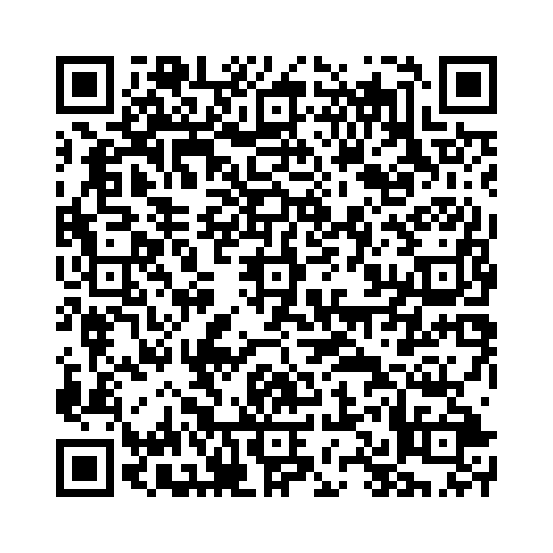

関係代名詞 所有格 は、名詞の所有を示す際に使われます。通常、whose を使います。
※1 以下の2文が1文になる。
This is the man. His car was stolen. （こちらは男性です。彼の車は盗まれた。）
以下の単語を並び替えて正しい文を作成しましょう。（和訳を参考にしてください）

問題1: (is / the / whose / stolen / man / car / was / this) - これは車を盗まれた男性です。
解答: This is the man whose car was stolen。
解説: whose は所有を示し、「その男性の車」を表します。
問題2: (a / has / whose / she / friend / is / doctor / mother) - 彼女には母親が医者の友人がいます。
解答: She has a friend whose mother is a doctor。
解説: whose は「その友人の母親」を表します。
問題3: (man / know / whose / the / I / house / big / is) - 私は家が大きいその男性を知っています。
解答: I know the man whose house is big。
解説: whose は「その男性の家」を表します。
問題4: (dog / met / the / I / whose / is / black / person) - 私は犬が黒いその人に会いました。
解答: I met the person whose dog is black。
解説: whose は「その人の犬」を表します。
問題5: (book / bought / whose / she / is / interesting / author / a) - 彼女が買ったその本の著者は興味深いです。
解答: She bought a book whose author is interesting。
解説: whose は「その本の著者」を表します。